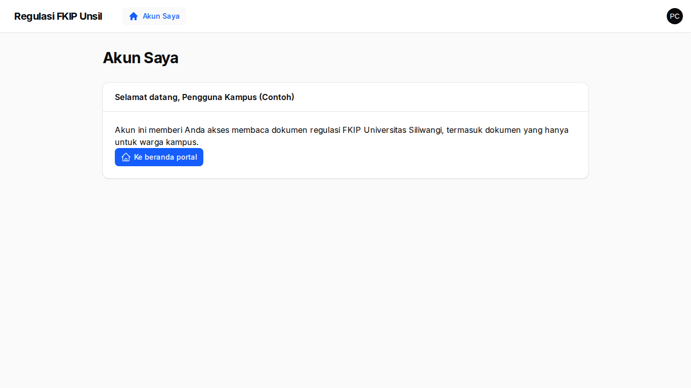
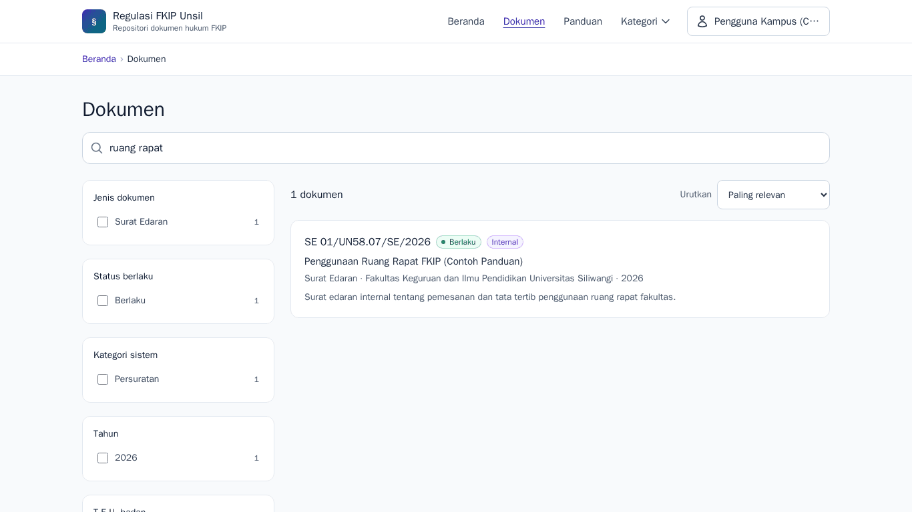
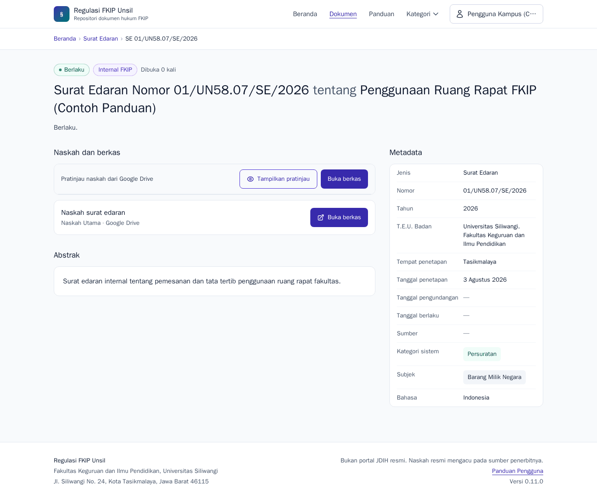
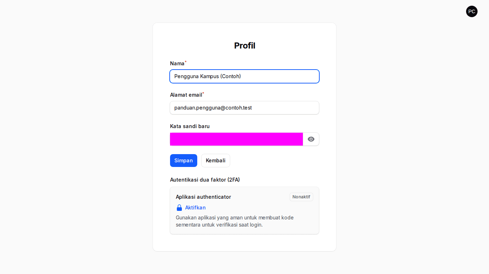
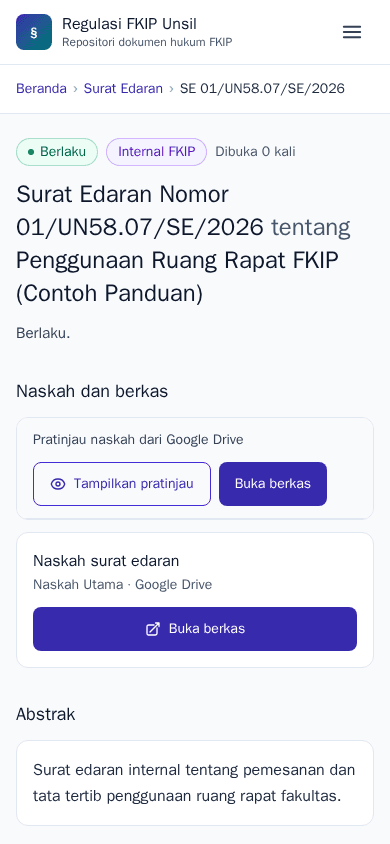

Panduan Pengguna Terdaftar
Tujuan peran: membaca dan membuka naskah dokumen publik dan internal (mis. surat edaran internal fakultas). Tamu tanpa akun hanya melihat dokumen publik.
Cara masuk
Pada portal klik Masuk → Daftar bila belum punya akun. Gunakan surel @unsil.ac.id (surel lain ditolak), lalu klik tautan verifikasi yang dikirim ke surel Anda. Setelah masuk Anda kembali ke portal.
Langkah
- Halaman akun
Menampilkan identitas Anda dan tautan ke portal. Ubah nama/kata sandi lewat menu pengguna → Profil; menu yang sama memuat Panduan Pengguna.
Halaman akun - Mencari dokumen internal
Setelah masuk, hasil pencarian juga memuat dokumen berlabel Internal. Setelah keluar, dokumen itu tidak muncul lagi.
Pencarian memuat dokumen internal - Membuka dokumen internal
Klik Buka berkas untuk membuka naskah di Google Drive. Berkas internal dibagikan terbatas: masuk ke akun Google kampus bila diminta.
Detail dokumen internal - Profil
Ubah nama, kata sandi, dan (opsional) aktifkan MFA.
Profil - Di ponsel
Pratinjau sematan dapat lambat di ponsel; gunakan tombol Buka berkas.
Detail dokumen (ponsel)
Tanya-jawab
- Mengapa pendaftaran saya ditolak?
- Hanya surel
@unsil.ac.idyang diterima. - Saya tidak dapat masuk ke /admin?
- Panel admin khusus staf (kontributor/admin). Pengguna terdaftar memakai portal dan halaman akun.
- Berkas tidak dapat dibuka?
- Untuk dokumen internal, masuk ke akun Google @unsil.ac.id. Bila tetap gagal, laporkan ke admin regulasi.
- Lupa kata sandi?
- Pilih "Lupa kata sandi" di halaman masuk.
Kontak
Admin Regulasi FKIP (regulasi-fkip@unsil.ac.id) · Admin TI Fakultas untuk akun & MFA